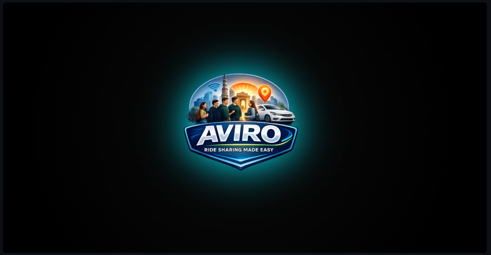
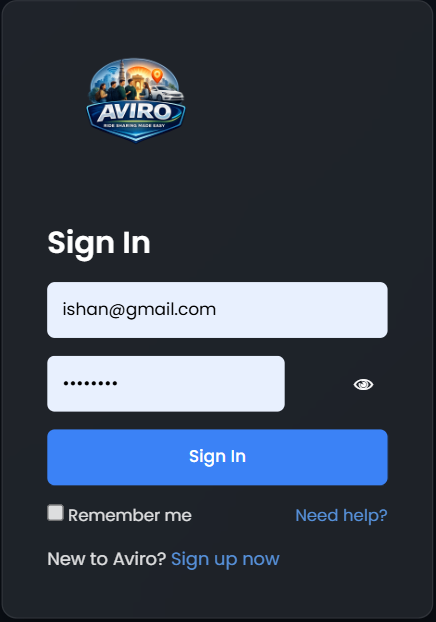
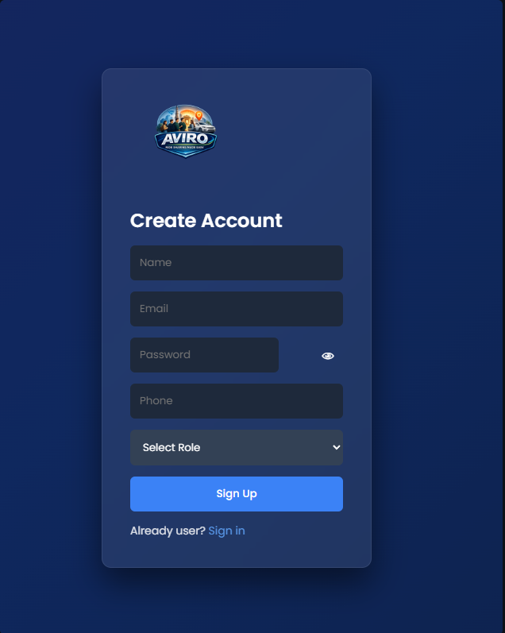
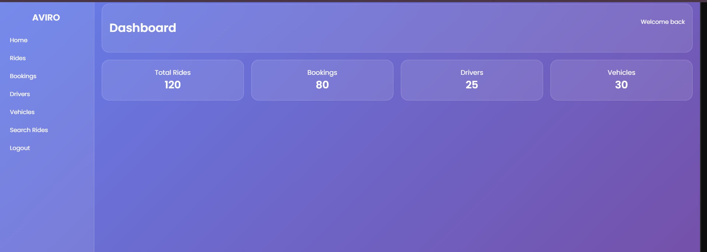

AVIRO
AVIRO – Affordable, Verified & Intelligent Ride Organizer – is a smart college ride-sharing platform for Pune students. It connects students travelling on similar routes and timings to find affordable, safe and convenient rides, reducing travel costs, fuel wastage and traffic while promoting eco-friendly travel.
Features
- AI-powered student ID verification
- Ride booking and ride sharing
- Route-based ride matching
- Live GPS ride tracking
- Real-time WebSocket chat
- UPI payments
- JWT authentication and role-based access
- Responsive user interface
Tech Stack
React
JavaScript
Java
Spring Boot
Spring Security
JWT
WebSocket
MySQL
Screenshots



